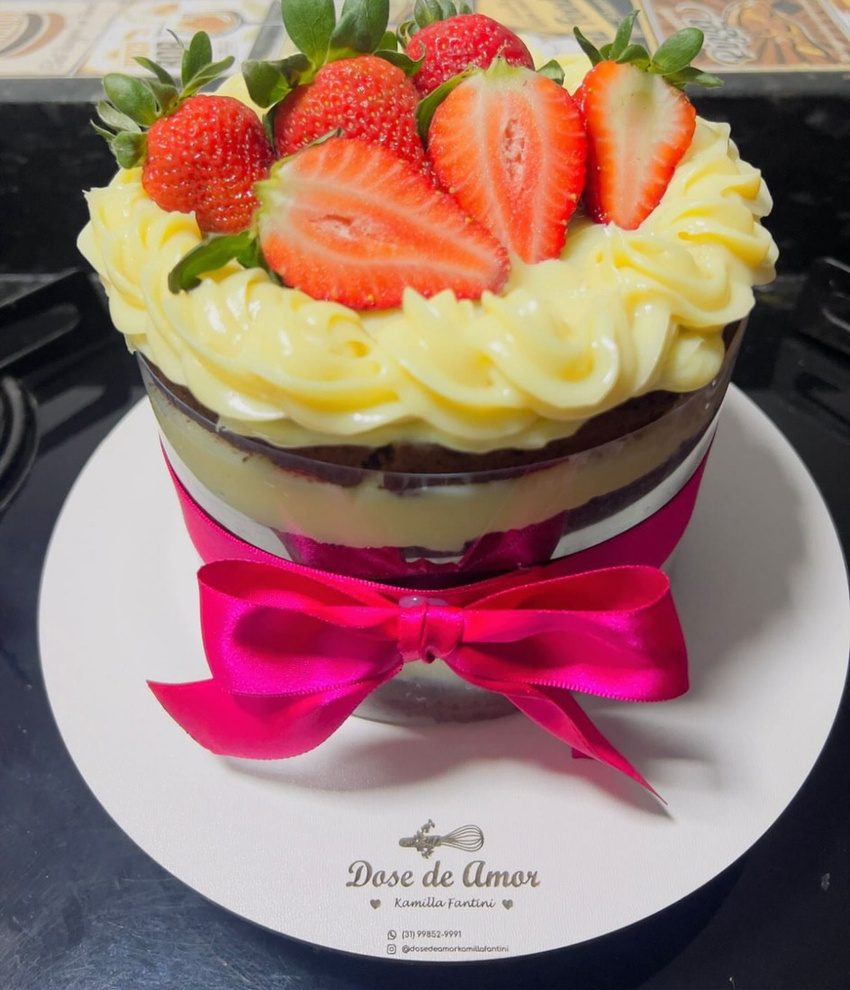

Nossas linhas
Dos bolos decorados aos docinhos artesanais, cada detalhe é feito à mão.

Carinho e cuidado
“Tudo o que sua festa precisa para ser inesquecível.”
Dos bolos decorados que são o centro das atenções aos docinhos artesanais que derretem na boca: aqui, transformamos açúcar em celebração. Cada detalhe é feito à mão para garantir que o seu momento especial tenha o sabor que ele merece.
Deixe a doçura por nossa conta!
Linha Gourmet
Nossos sabores especiais, como Ferrero Rocher, Ouro Branco, Ninho com Nutella e Morangos, em bolos, bento cakes e docinhos com acabamento feito à mão.
O bolo da sua celebração
Bolo decorado, bento cake ou Kit Festa completo. Escolha os sabores e nossa equipe envia o orçamento pelo WhatsApp.
EncomendarAs maiores conquistas estão do outro lado do medo.
O amor pela confeitaria sempre esteve presente, mas a história da Fantini Confeitaria começou a ganhar forma lá em 2018.
Hoje, a Fantini Confeitaria não é apenas um negócio. É a realização de um sonho construído com trabalho duro, coragem, lembranças afetivas e, claro, a mesma dose de amor de sempre.
Conheça nossa históriaO que dizem nossos clientes
Atenção a golpes. A Fantini atende somente pelo WhatsApp , pelo Instagram oficial e por este site. Nunca pedimos pagamento por links enviados de outros números.